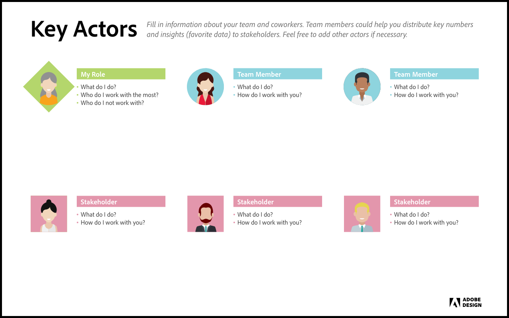
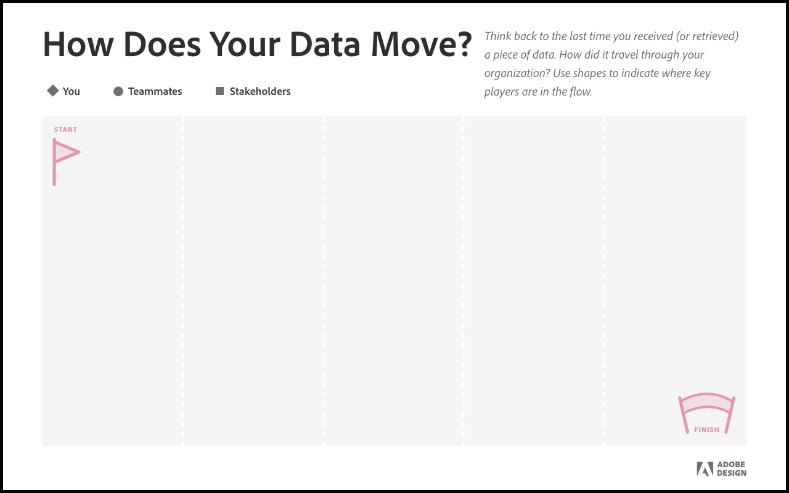
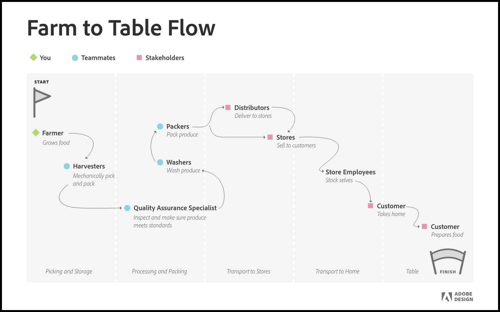
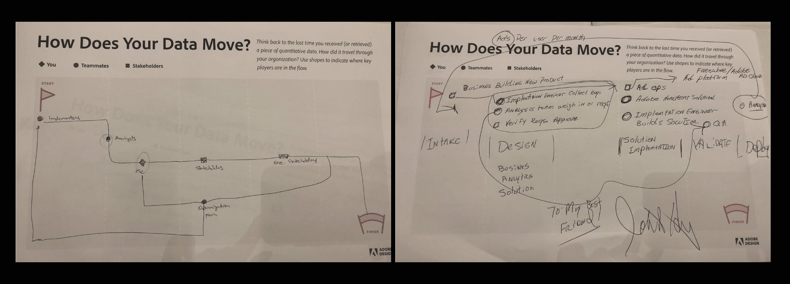

Customer research at Summit
Summit is Adobe’s yearly customer conference. We were able to sit down one on one with customers during the conference to chat with them about their day to day, team structure, user flows, and any pain points they were experiencing with Adobe Analytics.
Session structure
- Ice breaker - as the members arrived they were asked to share their favorite visualization tools with their seat neighbors
- Key actors - members were asked to identify their day to day roles, and teammates
- Flow of data - members filled out the most common way information flowed between the key actors.
- Share - members shared their key actors and flows with one another
Ice breaker
On the recommendation of our Research team the session was started with an ice breaker. It would help with the awkward silence, in addition to helping everyone get in the right frame of mind for the rest of the session.
Key actors
The key actors activity was designed to get a better understanding of the individual in the session, and where they fit in within the company structure. From past research we knew that having everyone self identify their role and responsibilities was crucial. Due to the new-ness of leveraging Analytics tools, a lot of companies did not have a dedicated team, it was often times someone’s part time responsibility.
Understanding our users bases backgrounds, teams and day to day responsibilities was invaluable.
{kind=link}
With the information from this activity alone we were better able to understand the ecosystem of Analytics users within these companies.
Role
Design lead
Category
- User interviews
- Problem validation
- Design research
The flow of data
The flow of data activity was designed to work in conjunction with the key actors activity. As a team we knew that sharing the information and insights from Analytics outward (to stakeholders and teammates) was a common workflow. To understand who was getting what information, and how the session members were asked to map out where their data started and where it ended. This activity was intentionally vague, by giving each individual a blank sheet and asking them to map out the data flowed between the key actors listed by them before, we were better able to understand their typical user flow, without asking leading questions and biasing the results.
{kind=link}
We didn’t want to completely over intimidate them with a blank sheet of paper. The farm to table flow shown below was meant to give everyone an idea of the general “rules” of the activity, without biasing or leading them.
{kind=link}
We didn’t want to completely over intimidate them with a blank sheet of paper. The farm to table flow shown below was meant to give everyone an idea of the general “rules” of the activity, without biasing or leading them.
{kind=link}
Everyone caught on relatively quickly. While each member was filling out their flows the Product team would circle around and ask the members about specific pieces in their flows. A lot of flows were far from linear, the members were eager to tell us how we could help them simplify their data flows.
Sharing
The sharing portion of this session was extremely strategic. It allowed for each member to talk through each of the artifacts they had just made. Their peers could then weigh in with suggestions, or loud agreement (if a pain point was shared). It also gave the product team a chance to take detailed notes. The setting was more relaxed than a one on one interview, and we were able to gather different insights than we would have had the participants been under the one on one pressure which often accompanies formal interviews.
Results
After the session all of the individual artifacts were scanned and combined into a comprehensive user flow.
The notes from the product team in combination with the comprehensive user flow formed the initial Jobs to be done, and a series of testable hypothesis. Both would greatly inform the designs moving forward. By doing this person to person research hours of design guesswork and Product team discussion were saved.